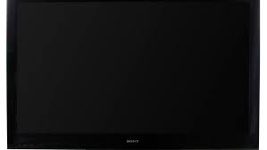

| Genre | Current affair Talk |
|---|---|
| Presented by | Amir liaqut hussain |
| Country of origin | Pakistan |
|
|
Urdu English |
| NO. epoisode | 164(as of 11 June 2017) |
| Production | |
|
production (s)
location(s) |
Karachi, Sindh
40 Minutes |
| Release | |
| Original network | Bol News |
| Original release |
18 November 2016–
present |
| External links | |
| ceneter | |
From Wikipedia, the free encyclopedia
Aisay Nahi Chalay Ga ( Urdu : ایسے نہیں چلےگا) [a] is a Pakistani current affairs and political talk show , hosted by Aamir Liaquat on Bol News
On 7 January 2017, Liaquat asserted during his show that the death of Bollywood actor
Om Puri
, known for his pro-Pakistan views, had been plotted by the
Indian establishment
.[
1
]
Liaquat has called out and prominently criticised several Pakistani
liberal
and leftist personalities on his show for their political and ideological views.[
7
][
8
] One such focus of attention was
Tarek Fatah
, one of
the staunchest critics of Pakistan. The two were later involved in a
Twitter
feud.[
9
]
On 26 January 2017, the
Pakistan Electronic Media
Regulatory Authority (PEMRA) ordered a suspension of Liaquat's show over "hate speech".[
10
] The media watchdog's notification stated that Liaquat had aired during his show, from 2 January to 24 January, allegations comprising derogatory remarks, incitement to violence, casting of aspersions, and accusations of anti-state or anti-religious activities against various individuals.[
11
] The suspension came after Liaquat had lashed out at some civil society activists on his show for blaming the country's
intelligence agencies
over the disappearance of five online bloggers, who were accused of hosting
blasphemous
posts or content critical of the
military
on their pages.[
7
][
10
][
12
][
13
][
14
]
However, the
Sindh High Court
granted a stay order against PEMRA's decision and allowed Liaquat to continue his broadcasts until a verdict was issued on the matter.[
15
] The
Supreme Court
then directed Bol to cease airing the show or face contempt of court charges, and Bol agreed to follow the court's order.[
16
] Later, the
Islamabad High Court
overturned PEMRA's ban, allowing the show to continue its transmission on 28 February.[
17
]
Amnesty International
criticised the Pakistani government over its purported inaction, terming the show's content a "smear campaign" against human rights and civil society activists.[
18
]
During the suspension, the show was renamed to "Qaum Kay Saath Aisay Nahi Chalay Ga". It featured a dummy cartoon disguised in a
Fawkes mask
who talked to the audience in a robotic
voice-over
. The show was reverted to its original name and format when Aamir Liaquat was reinstated as host. However, following Liaquat's resignation from the channel in November 2017, the character was reinstated under the name "Mr. Qaum".[
5
] By April 2018, Aamir Liaquat re-joined the show as its host after he returned to Bol News.[
6
]
Notes [ edit ]
 Telvision portal
Referances [ eidt ]